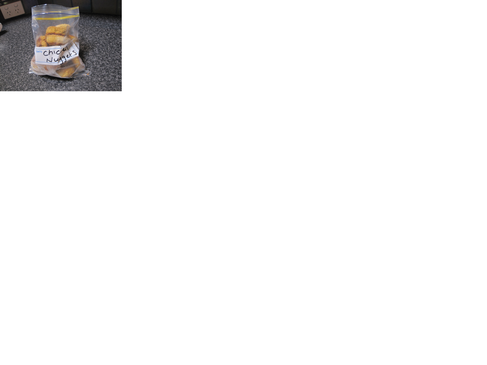

Main Page
When out to eat at a cafe, there are few sensations more exiting than taking that very first glance at the menu just to realize your favorite glorious golden chunks of chicken are present on it. Today, I will be trying to capture that same sensation in you, the reader. Or are you the chef? In any case, you will be learning how to make a delicious meal from frozen bag to ready for dinner.

Ingredients:
- Paper Plate
- Aluminum foil
- Cooking spray
- Toaster oven
- Bag of frozen tyson chicken nuggets
- (Optional) Plastic bag for individual nugget storage in freezer
- Sweet Baby Ray's BBQ sauce
- Near expiration Honey Mustard
Steps
- Preheat oven to 400 degrees F
- Remove chicken chunks from plastic bag or packaging
- Cover oven tray in aluminum foil
- Spray covered tray with cooking spray
- Place globs of chicken onto tray, place in oven when at temperature
- After 5-7 minutes, rotate the nuggets for maximum crispiness. This step is optional.
- Once time is done, let chicken sit for at least 2 minutes.
- Liberally apply Sweet Baby Ray's to the affected area.
Return to top